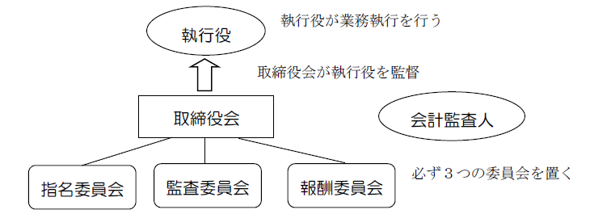
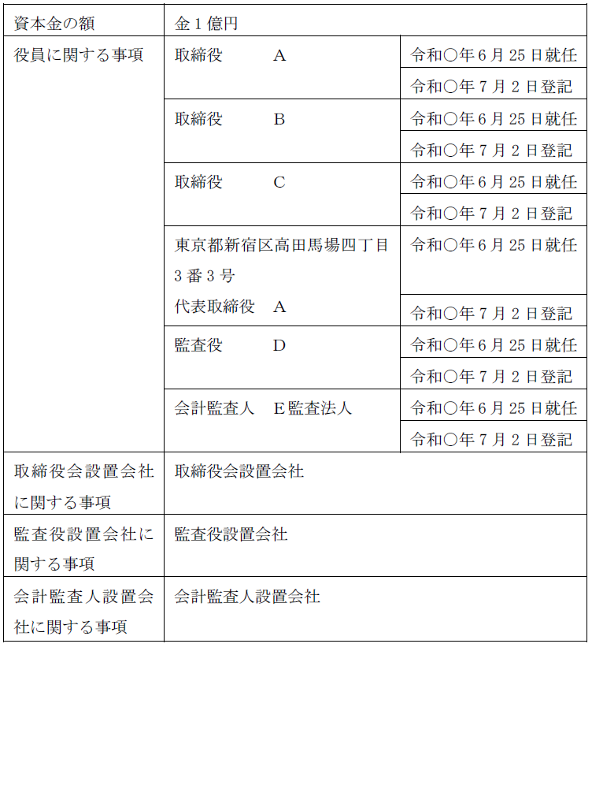
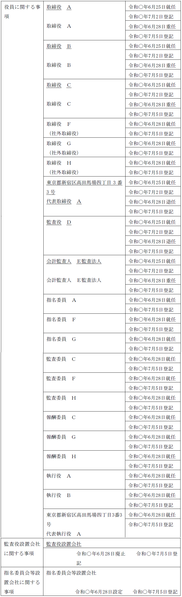

第２編 株式会社
第２章 機関
第１０節 指名委員会等設置会社
1. 意義
：指名委員会、監査委員会、報酬委員会を置く株式会社（会社法2条12号）
取締役会・代表取締役及び監査役という従来の株式会社の機関とは異なる、基本的にアメリカ型の機関制度であるが、あまり利用されていない。
2. 趣旨
(1) 取締役会の監督機能を強化するために執行と監督の厳格な分離を図る
指名委員会等設置会社では、取締役会は経営を監督する立場にあり、執行役が業務を執行する。
(2) 業務執行の効率性を高めるために執行役への権限委譲を図る
(3) 取締役会の独立性を高めるために社外取締役を中心に構成される各委員会を設置する
3. 指名委員会等設置会社の機関設計

(1) 必置機関
指名委員会等設置会社には、必ず取締役会及び会計監査人を置かなければならない。また、1人又は2人以上の執行役を置かなければならず（会社法402条1項）、この執行役が業務執行を行い、代表機関として代表執行役が置かれる（会社法420条1項）。
また、指名委員会・監査委員会・報酬委員会を置かなければならない。取締役である各委員の員数は3人以上であって、各委員の過半数は社外取締役でなければならない（会社法400条3項）。これは、指名委員会等設置会社においては、社外取締役が中心となる指名委員会等が執行役に対する強い監督機能を発揮することが期待されているからである。
※置くことができない機関等
・監査役及び監査等委員会は設置不可（会社法327条4項、6項）
・監査役会設置会社のような常勤の監査等委員を定める規定は設けられていない（会社法390条2項2号、390条3項参照）
・代表取締役（代表執行役が代表機関であるため）
(2) 取締役と支配人の兼任禁止
取締役は、支配人その他の使用人と兼任することはできない（会社法331条4項）。
指名委員会等設置会社では、執行役が業務の執行を行い、監督と執行との分離を図ることによって取締役会の監督機能を高めるため、原則として、取締役の資格では株式会社の業務を執行することができない（会社法415条）。一方、支配人その他の使用人は執行役の指揮命令を受けて職務を執行する立場の者であるため、取締役と兼任するのは適切でないと考えられ、兼任が禁止された（指名委員会等設置会社以外の会社なら取締役と支配人の兼任は可能）。
もっとも、取締役と執行役を兼任することは認められている（会社法402条6項）。これは、業務執行を監督するためには、その現場の事情・状況を十分に知る必要があるところ、監督と執行を過度に分離してしまうとそれを阻害するおそれがあるからである。
執行役と支配人その他の使用人の兼任は禁じられていない（会社法404条3項後段参照）。
3. 選任機関
各委員も、執行役も、取締役会の決議によって選任・選定される（後述）。
1. 取締役及び執行役の任期・選任
指名委員会等設置会社においては、指名委員会等設置会社を除く公開会社以上に取締役の信任を問う機会を多くする必要があるので、取締役の任期は、通常よりも短くなっている。
執行役の選任は、執行役に対する監督権限の一部として、取締役会が行う。
| 取締役 | 執行役 | |
| 選任 | 株主総会 | 取締役会（会社法402条2項） |
| 解任 | 株主総会でいつでも可 （会社法339条1項） |
取締役会でいつでも可 （会社法403条1項） |
| 任期 | 選任後1年以内に終了する事業年度のうち最終のものに関する定時株主総会の終結の時まで（会社法332条6項、1項） | 選任後1年以内に終了する事業年度のうち最終のものに関する定時株主総会の終結後最初に招集される取締役会の終結の時まで（会社法402条7項本文）（※） |
| 伸長 | × | |
| 短縮 | 定款又は株主総会の決議で可 （会社法332条1項） |
定款で可 （会社法402条7項ただし書） |
（※）任期を「取締役会」の終結時までとするのは、執行役の選任機関が株主総会ではなく、取締役会であるからである。
2. 代表執行役の選定
(1) 選定
指名委員会等設置会社は、執行役の中から代表執行役を選定しなければならない。執行役が1人の場合には、その者が代表執行役に選定されたものとされるが、執行役が数人いる場合には、取締役会の決議をもって代表執行役が選定される（会社法420条1項）。定款で執行役の互選とすることはできない。
執行役と株式会社との関係は委任契約であり（会社法402条3項）、委任契約がその効力を生じ被選定者がその地位に就くためには、被選定者による承諾が必要となる。これは各委員の場合も同様である。
(2) 解職
取締役会はその決議によって、いつでも代表執行役を解職することができる（会社法420条2項）。
3. 委員の選定
(1) 通常の場合
指名委員会等設置会社は、取締役会の決議により、取締役の中から指名委員会・監査委員会・報酬委員会の3つの委員会を組織する委員を選定する（会社法400条2項）。1人の取締役が複数の委員会に属することも可能である。
各委員会の委員は、いつでも取締役会の決議によって解職することができる（会社法401条1項）。また、委員の員数を欠くに至った場合の処置については、役員が欠員となった場合の処置と同じである（会社法401条2項、3項、346条参照）。
(2) 設立時委員の選定・解職
設立しようとする株式会社が指名委員会等設置会社である場合には、設立時取締役は、その過半数による決定をもって、設立時委員（指名委員、監査委員及び報酬委員）及び設立時執行役並びに設立時代表執行役（ただし、設立時執行役が2人以上の場合に限る）を選ばなければならない（会社法48条1項、3項）。また、これらの者の会社成立までの間の解職・解任も設立時取締役の過半数の決定による（会社法48条2項、3項）。
(3) 監査委員の兼任禁止規定
監査委員会の委員（監査委員）は、株式会社若しくは子会社の執行役若しくは子会社の業務執行取締役、又は子会社の会計参与若しくは支配人その他の使用人を兼ねることができない（会社法400条4項）。業務執行と業務監督の分離の徹底を図るためである。
1. 各委員会の運営
(1) 取締役会との類似性
指名委員会等は各委員が招集し、特定の招集権者を定めることはできない（会社法410条）。社外取締役以外の委員を招集権者としてしまうと、社外取締役の招集権が奪われてしまうからである。
しかし、それ以外は、指名委員会等の運営について、取締役会に関する規律と類似する多くの規定が設けられている（※）。
(2) 決議要件
指名委員会等の決議は、議決に加わることができる委員の過半数が出席し、その過半数をもって行う（会社法412条1項）。
この定足数と決議要件は、ともに取締役会によりこれを上回る割合を定めることができる（会社法412条1項）。特別利害関係人は、この決議に加わることはできない（会社法412条2項）。
なお、決議に参加した委員であって議事録に異議をとどめないものは、その決議に賛成したものと推定される（会社法412条5項）。
(3) 議事録の閲覧等
取締役は、すべての指名委員会等の議事録を閲覧・謄写することができる（会社法413条2項）。指名委員会等は取締役会の内部機関だからである。
株主、債権者又は親会社社員の場合は、裁判所の許可が必要である（会社法413条3項、4項）。
(4) 費用等
委員は職務執行についての費用等を株式会社に対して請求することができ、株式会社は、その費用等が職務の執行に必要でないことを証明した場合でなければ、これを拒むことができない（会社法404条4項）。費用の償還請求等を容易にすることによって、資金不足のために指名委員会等の権限の行使が適切に行えないという事態を防止するためである。
2. 執行役等の出席・説明義務
執行役等（執行役、取締役及び会計参与をいう）は、指名委員会等の要求があった場合には、指名委員会等に出席し、求められた事項について説明しなければならない（会社法411条3項）。各委員会がその権限を行使するためには、執行役等の説明を求める必要が生ずると予想されるからである。
3. 各委員会の権限
(1) 指名委員会
指名委員会は、株主総会に提出する取締役（会計参与設置会社にあっては、取締役及び会計参与）の選任及び解任に関する議案の内容を決定する（会社法404条1項）。
また、指名委員会等がその委員の中から選定した者は、当該指名委員会等の職務の執行の状況を取締役会に遅滞なく報告しなければならない（会社法417条3項）。取締役会と各委員会との間に緊密な連携を確保するためである。
(2) 監査委員会
監査委員会は、次に掲げる職務を行う（会社法404条2項）。
ⅰ 執行役等（執行役、取締役及び会計参与）の職務の執行の監査及び監査報告の作成
ⅱ 株主総会に提出する会計監査人の選任及び解任並びに会計監査人を再任しないことに関する議案の内容の決定
また、次のように、業務及び財産の状況の調査・報告聴取権限を有する。
(a) 自社に対しての権限
監査委員会が選定する監査委員は、いつでも、他の取締役・執行役・会計参与及び支配人その他の使用人に対してその職務の執行に関する事項の報告を求め、又は指名委員会等設置会社の業務及び財産の状況を調査できる（会社法405条1項）。
(b) 子会社に対しての権限
監査委員会が選定する監査委員は、監査委員会の職務を執行するため必要があるときは、指名委員会等設置会社の子会社に対して事業の報告を求め、又はその子会社の業務及び財産の状況を調査することができる（会社法405条2項）。もっとも、子会社は、正当な理由があるときは、この報告又は財産の状況の調査を拒むことができる（会社法405条3項）。
(c) 各監査委員の権限
ⅰ 不正行為の報告
各監査委員は、執行役・取締役が不正の行為をし、若しくはそのような行為をするおそれがあると認めるとき、又は法令・定款に違反する事実若しくは著しく不当な事実があると認めるときは、遅滞なく、その旨を取締役会に報告しなければならない（会社法406条）。
ⅱ 差止請求
各監査委員は、執行役・取締役が株式会社の目的の範囲外の行為その他法令・定款に違反する行為をし、又はこれらの行為をするおそれがある場合に、その行為によって株式会社に著しい損害が生ずるおそれがあるときは、その執行役・取締役に対し、その行為をやめることを請求することができる（会社法407条1項）。
裁判所が、執行役・取締役に対し、仮処分によりその行為をやめることを命ずるときは、監査委員に担保を立てさせないとされている（会社法407条2項）。
(3) 報酬委員会
報酬委員会は、執行役等の個人別の報酬等の内容を決定する。
執行役が支配人その他の使用人を兼任しているときは、当該支配人その他の使用人の報酬等の内容についても、報酬委員会が決定する（会社法404条3項）。
報酬委員会が定めた執行役・取締役・会計参与が受ける個人別の報酬等（会社法404条3項前段）の決定を、取締役会が覆すことはできない。報酬委員会の決定は、最終決定である。つまり、株主総会の関与なく、報酬委員会が取締役・執行役・会計参与の報酬を決定するわけである。
1. 取締役会の権限
(1) 業務執行の決定（会社法416条1項1号）
指名委員会等設置会社の取締役会は、次のⅰからⅴに掲げる事項その他指名委員会等設置会社の業務執行の決定権限を有する。
ⅰ 経営の基本方針
ⅱ 監査委員会の職務の執行のため必要なものとして法務省令で定める事項
ⅲ 執行役が2人以上ある場合における執行役の職務の分掌及び指揮命令の関係その他の執行役相互の関係に関する事項
ⅳ 執行役による取締役会の招集の請求（会社法417条2項）を受ける取締役
ⅴ 執行役の職務の執行が法令及び定款に適合することを確保するための体制その他株式会社の業務並びに当該株式会社及びその子会社から成る企業集団の業務の適正を確保するために必要なものとして法務省令で定める体制の整備
(2) 執行役等の職務の執行の監督（会社法416条1項2号）
指名委員会等設置会社では、執行と監督の役割を分け、取締役会の監督機能を強化している。
2. 業務決定の権限の委任の可否
指名委員会等設置会社においては、業務決定の権限を、取締役に委任することはできない（会社法416条3項）。
しかし、法の定める基本事項（会社法416条4項ただし書各号）を除いて、執行役に委任することができる（会社法416条4項本文）。
また、会社法348条の2第2項の要件を満たす場合には、取締役会の決議によって、業務の執行を社外取締役に委託することができる（会社法348条の2第2項）。
3. 取締役会の運営
(1) 招集権者
指名委員会等設置会社の取締役会は、たとえ招集権者の定めがある場合であっても、指名委員会等により選定された委員も招集することができる（会社法417条1項）。取締役会と各委員会の連絡を密にするために、認められている。
また、執行役も、取締役会の目的である事項を示して、取締役会の招集を請求することができ、一定の要件のもとで、招集がされないときは自ら招集することができる（会社法417条2項）。執行役が業務執行をするうえで、取締役会決議が必要であることもあるため、認められている。
(2) 報告義務
取締役会においては、指名委員会等が選定した委員は、遅滞なく、指名委員会等の職務執行の状況報告をしなければならず（会社法417条3項）、執行役については、3か月に1回以上、自己の職務の執行の状況を報告しなければならない（会社法417条4項前段）。
1. 執行役の権限・職務
執行役は、株式会社との関係は委任関係であり（会社法402条3項）、取締役会決議に基づき委任を受けた業務執行の決定をし、株式会社の業務を執行する（会社法418条）。
(1) 各委員会への出席義務（上記３ 2.参照）
(2) 監査委員に対する報告義務
執行役は、株式会社に著しい損害を及ぼすおそれのある事実を発見したときは、直ちに、その事実を監査委員に報告しなければならない（会社法419条1項）。
2. 執行役の資格
執行役の資格等は取締役と同様であるが（会社法402条4項が331条1項を準用している）、非公開会社である指名委員会等設置会社にあっては、執行役が株主でなければならない旨を定款で定めることができる（会社法402条5項）。
3. 取締役の規定に関する準用
執行役については、その職務権限の類似性から、取締役の規定に関する多くの準用がなされ、また同列に規定されている。すなわち、執行役の欠格事由（会社法402条4項、331条1項）、執行役の忠実義務（会社法419条2項、355条）、競業及び利益相反取引の制限（会社法419条2項、356条、365条）、執行役の責任（会社法423条以下）等である。
4. 代表執行役の権限
代表執行役は、株式会社の業務に関する一切の裁判上又は裁判外の行為をする権限を有し、これに加えた制限は善意の第三者に対抗できない（会社法420条3項、349条4項、5項）。また、表見代表執行役の制度も、表見代表取締役の制度にならって整備されている（会社法421条）。
【申請例26 指名委員会等設置会社の定め 設定】
事例： 令和○年6月28日、別紙1の登記がなされた株式会社において、定時株主総会で、指名委員会等設置会社の定めを設ける決議がされ、次の者が選任された。被選任者は、席上就任を承諾した。なお、会計監査人についての決議はなされなかった。また、当会社の本店の所在地を管轄する登記所の管轄区域内にＥ監査法人の主たる事務所はない。
取締役 Ａ 取締役 Ｂ 取締役 Ｃ 取締役（社外取締役）Ｆ
取締役（社外取締役）Ｇ 取締役（社外取締役）Ｈ
同日、取締役会（全員出席）において、次の者が、各委員、執行役及び代表執行役に選任・選定され、被選任・選定者は、席上就任を承諾した。なお、取締役会議事録には、代表取締役Ａの登記所届出印は押印されていない。
指名委員 取締役Ａ 同 取締役（社外取締役）Ｆ
同 取締役（社外取締役）Ｇ
監査委員 取締役Ｃ 同 取締役（社外取締役）Ｆ
同 取締役（社外取締役）Ｈ
報酬委員 取締役Ｃ 同 取締役（社外取締役）Ｇ
同 取締役（社外取締役）Ｈ
執行役 Ａ 同 Ｂ
代表執行役 Ａ（住所：東京都新宿区高田馬場四丁目3番3号）
別紙1
登記事項証明書の内容の抜粋

| 1. 登記の事由 | 監査役設置会社の定めの廃止 指名委員会等設置会社の定めの設定 取締役、監査役、代表取締役、会計監査人、委員、執行役及び代表執行役の変更 | 1. 登記すべき事項 | 令和○年6月28日監査役設置会社の定め廃止 同日指名委員会等設置会社の定め設定 同日次の者退任 代表取締役 Ａ 監査役 Ｄ 同日次の者重任 取締役 Ａ 取締役 Ｂ 取締役 Ｃ 会計監査人 Ｅ監査法人 同日次の者就任 取締役（社外取締役） Ｆ 取締役（社外取締役） Ｇ 取締役（社外取締役） Ｈ 指名委員 Ａ 指名委員 Ｆ 指名委員 Ｇ 監査委員 Ｃ 監査委員 Ｆ 監査委員 Ｈ 報酬委員 Ｃ 報酬委員 Ｇ 報酬委員 Ｈ 執行役 Ａ 執行役 Ｂ 東京都新宿区高田馬場四丁目3番3号 代表執行役 Ａ | 1. 登録免許税 1. 添付書面 | 金7万円 株主総会議事録 1通 株主の氏名又は名称、住所及び議決権数等を証する書面（株主リスト） 1通 取締役会議事録 1通 取締役の就任承諾書は株主総会議事録の記載を援用する 委員、執行役及び代表執行役の就任承諾書は取締役会議事録の記載を援用する 印鑑証明書 6通 Ｅ監査法人の登記事項証明書 1通 委任状 1通 |
|---|

1. 登記すべき事項
指名委員会等設置会社に関して登記すべき事項は、以下の事項である（会社法911条3項23号）。
・取締役のうち社外取締役であるものについて、社外取締役である旨
・各委員会の委員及び執行役の氏名
・代表執行役の氏名及び住所
2. 申請書の内容（指名委員会等設置会社の定めの設定の場合）
(1) 登記の事由
「指名委員会等設置会社の定めの設定」と記載する。
「委員、執行役、代表執行役、取締役、代表取締役の変更」等と記載する。
※他の登記
上記以外の「監査役設置会社の定めの廃止」等の登記の要否は、従前の機関構成により異なる。
(2) 登記すべき事項
「年月日指名委員会等設置会社の定め設定」と記載する。
年月日は、設定日を記載する。
また、上記申請例のように、就任・重任・退任する各役員（各委員を含む）の氏名又は名称を記載し、社外取締役である者についてはその旨も記載しなければならない。年月日は、退任日、就任承諾した日を記載する。
代表執行役は氏名及び住所が登記事項となる。
※他の登記
上記以外に、従前の機関構成により以下の登記等が必要になることがある。
・監査役がある場合には監査役の退任及び監査役設置会社の定めの廃止の登記
・監査役会がある場合には監査役会設置会社の定めの廃止の登記
・取締役会がない場合には取締役会設置会社の定めの設定の登記
・会計監査人がない場合には会計監査人の就任及び会計監査人設置会社の定めの設定の登記
(3) 添付書面
①株主総会議事録（特別決議の要件を満たすもの）
指名委員会等設置会社の定めの設定を決議した株主総会の議事録
②株主の氏名又は名称、住所及び議決権数等を証する書面（株主リスト）（商登規61条3項）
具体的には、代表者作成の証明書がこれに当たる。
③取締役会議事録
各委員、執行役の選任、代表執行役の選定を証するため添付する。
④就任承諾書（商登法54条1項）
取締役、各委員会委員、執行役及び代表執行役の就任承諾書を添付する。株主総会議事録又は取締役会議事録に、株主総会議事録又は取締役会の選定・選任決議の席上で就任を承諾した旨の記載があれば、株主総会議事録又は取締役会議事録の記載を援用することができる。
⑤本人確認証明書（商登規61条7項本文）
添付が不要となる場合を除き、取締役、執行役の住民票の写し等を添付する必要がある。
⑥印鑑証明書
原則として、代表執行役が就任承諾書に押した印鑑及び代表執行役の選定に係る取締役会議事録に押された出席取締役の印鑑の証明書が必要である。
⑦委任状
※社外取締役である旨の登記を申請する場合でも、社外取締役の社外性を証する書面の添付は要しない。
※他の登記
従前の機関構成により他の登記を申請する場合には、その登記に応じて添付書面が必要となる。
(4) 登録免許税
指名委員会等設置会社の定めの設定分として、申請件数1件につき、3万円（登免法別表1.24(1)ワ）。
取締役、代表取締役、各委員、執行役、代表執行役等の変更分として、申請件数1件につき、3万円（資本金の額が1億円以下の株式会社については、1万円）（登免法別表1.24(1)カ）。
※他の登記
従前の機関構成により他の登記を申請する場合には、その登記に応じて登録免許税が必要となる。